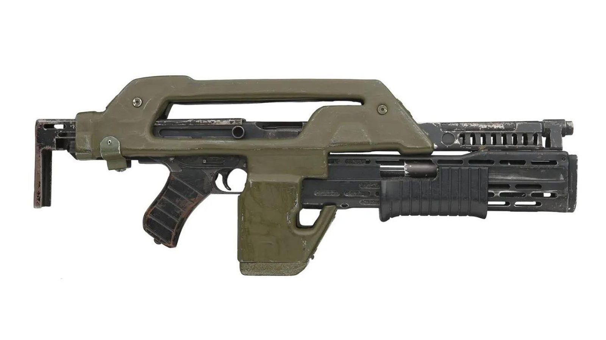

Sci-fi/Aliens (1986)/M41A Pulse Rifle

▦ 5 photos · ▶ 1 videoWeapon / Sci-fi
M41A
Pulse Rifle
The Colonial Marines’ standard rifle in Aliens (1986).
First seenAliens, 1986
Films2
Ammo10mm caseless, 99 rounds
Underneath30mm grenade launcher
Key sceneRipley tapes a pulse rifle to a flamethrower and walks into the hive for Newt.